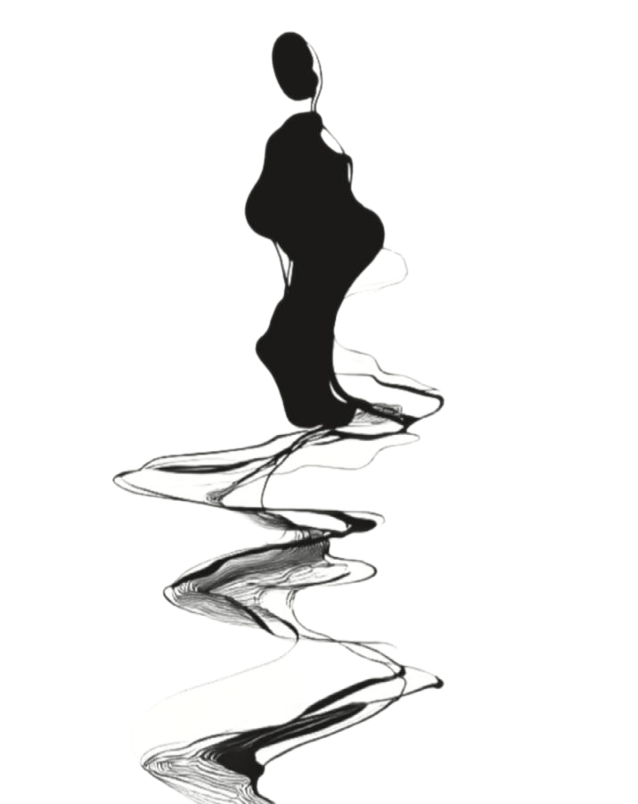
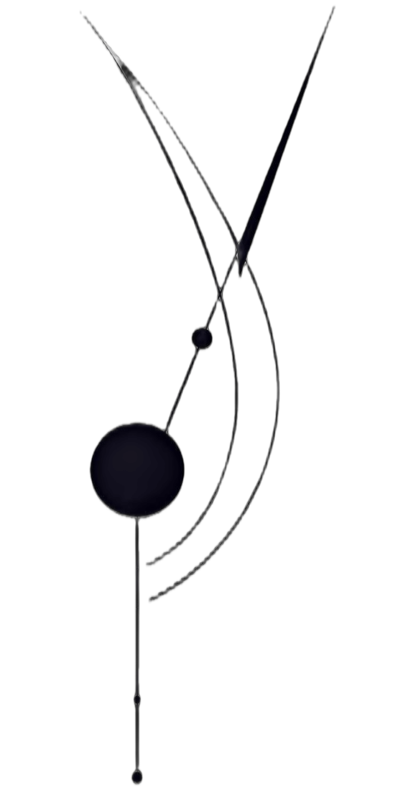
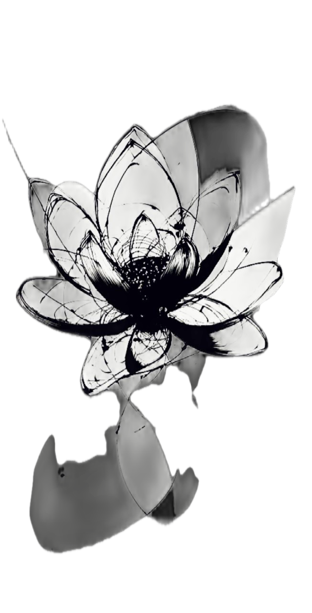
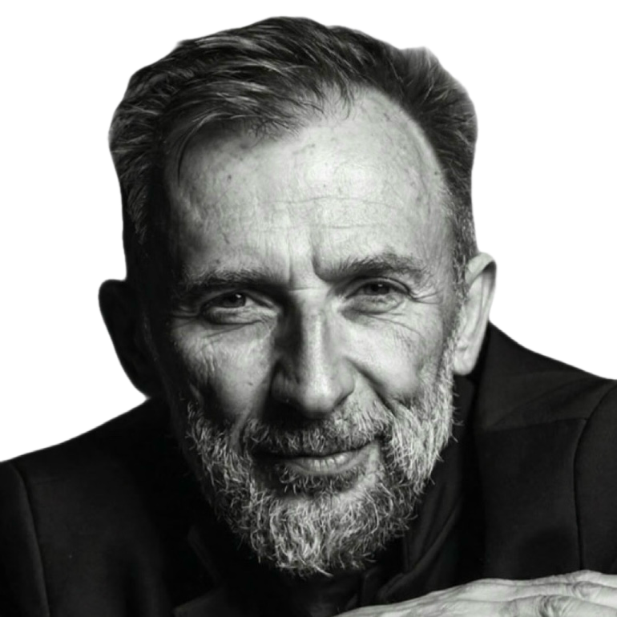
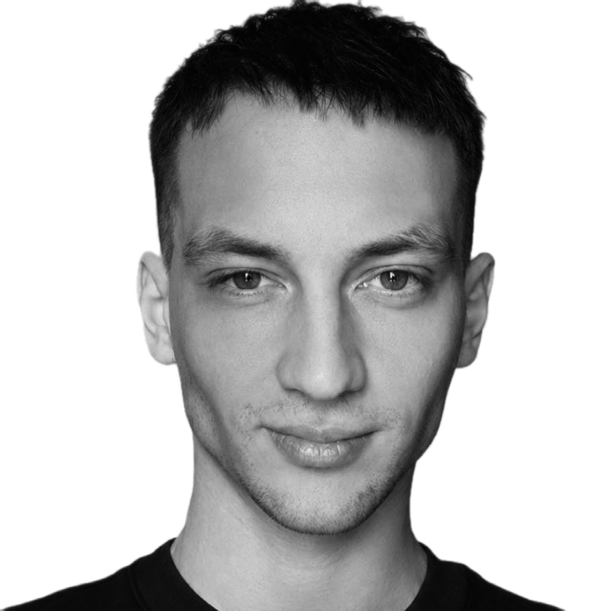

I Занятие первое
Принятие потока
Скала держится — стирается.
Вода уступает — проходит.
Не река несёт тебя — ты несёшь себя в реке.
В такой реальности выигрывает не тот, кто знает больше или работает быстрее — а тот, кто переваривает неопределённость и смотрит в реальность с открытыми глазами.
Перед каждым встаёт выбор: приспосабливаться к изменчивому миру, с каждым шагом теряя себя, — или возводить несокрушимую башню из убеждений и прятаться в ней.
В каждом из первых трёх занятий — одна метафора как плотная пустота: структура, в которой каждый кристаллизует собственный опыт. Метафоры самодостаточны и не выстроены в обязательную последовательность — они усиливают друг друга.



Не «появятся знания». Появится новое различение по трём осям одновременно — не как инструменты в перегруженной системе, а как сдвиг геометрии того, как человек думает и действует под нагрузкой.
После этого привычная плотность мира перестаёт быть тем, что ломает, и становится тем, что несёт.
«Перебрав за годы работы множество форматов и материалов, я не вижу сейчас ничего более методологически продуманного для проживания адаптивности, чем эти метафоры.
Каждая держит внутри живое натяжение — не «правильно против неправильного», а компас, по которому различимо третье. Именно это делает их рабочими в группе: участнику есть что различать, а не с чем согласиться.»

Основатель giper.fm — работа с мировыми брендами в e-commerce, выручка группы в 2025 году 37,6 млрд ₽. Метафоры разработаны как внутренний язык для партнёров и топ-менеджеров компании — чтобы описать, почему организация в самые турбулентные годы только набирает обороты. Группа ведётся с его согласия.

7 лет медицинского образования, несколько лет курпатовской методологии несодержательного мышления и теории ограничений Голдратта. Более 1400 часов разборов один на один. Три потока групповой программы «Бернерс», доходимость около 90%. Архитектор среды: на прямой вопрос — встречный вопрос или переадресация группе.
EX-Лаборатория нейронаук и поведения человека Сбера. 6 лет курпатовской методологии несодержательного мышления. Автор курса по нейромаркетингу для магистратуры МФТИ и Сбера. 2 года кейсов внедрения и монетизации ИИ в бизнесе — от кинокомпании до пищевого производства. Участвует в проработке архитектуры.
Один билет — одно занятие. Покупаешь столько, сколько нужно.
Набор открыт. Закроется, когда группа будет собрана.
Программа предназначена для совершеннолетних дееспособных лиц (18+). Это образовательный продукт: он не является медицинской, психотерапевтической, психологической или диагностической услугой и не заменяет их. Программа не гарантирует конкретного результата. Сессии записываются, запись является частью программы. Данные защищены.